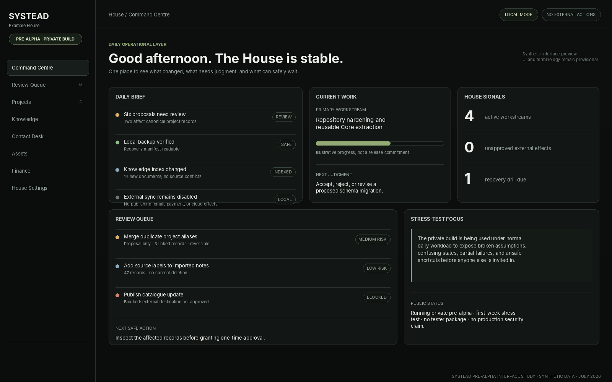
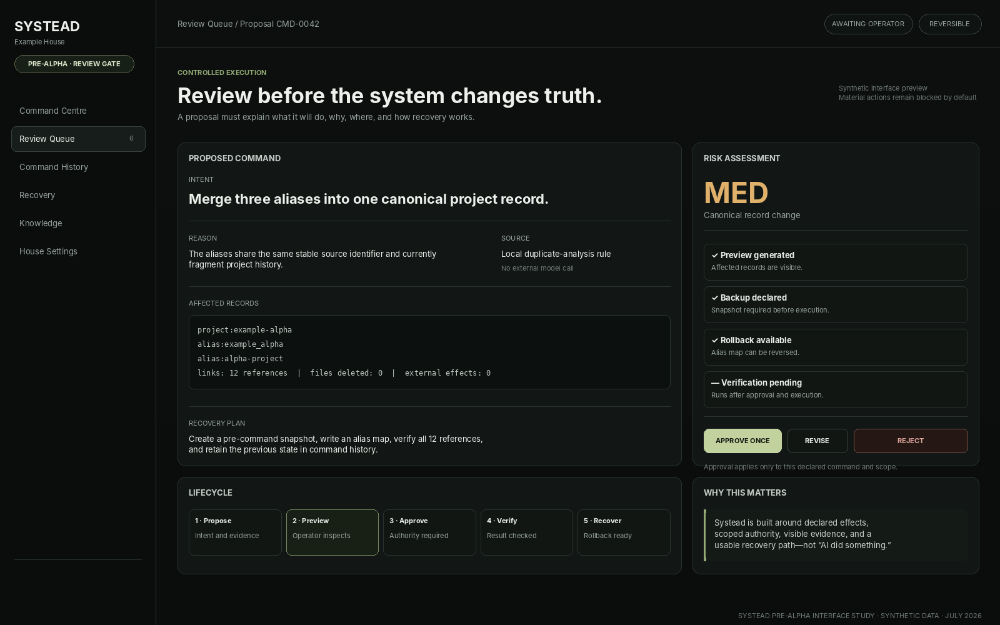
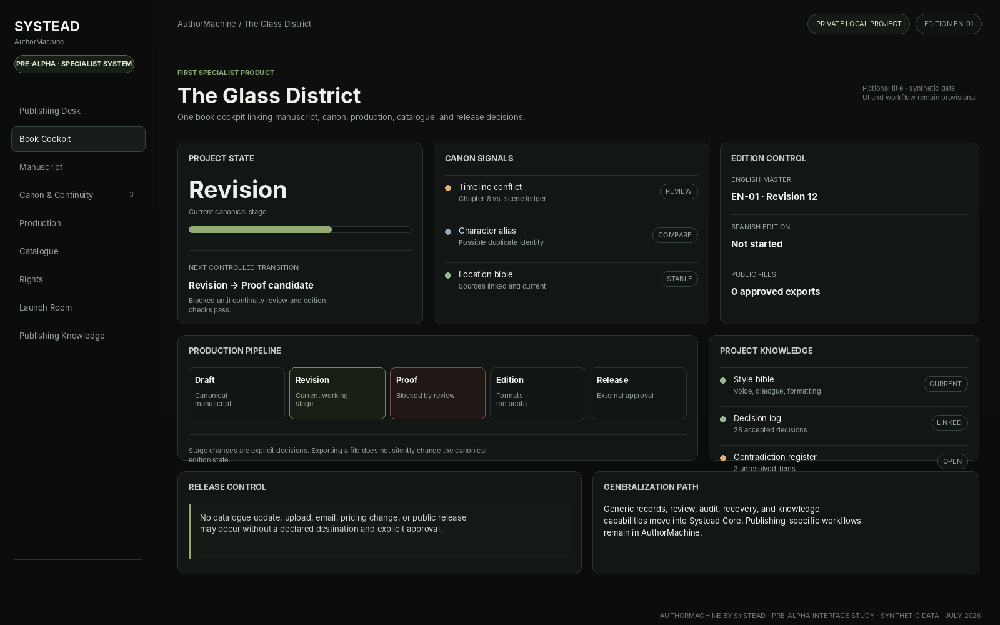

Canonical records
People, projects, assets, publications, decisions, obligations, and other entities are linked through stable records rather than copied into isolated modules.
Systead brings records, projects, knowledge, review, automation, and specialist systems into one controlled House—without quietly taking ownership of the operator’s data or decisions.
The system is running privately and is currently being stress-tested under real daily workload. It is not available for public testing yet.
A dashboard shows information. A House connects the records, rules, evidence, commands, review states, and recovery paths required to run ongoing work without creating five conflicting versions of the truth.
People, projects, assets, publications, decisions, obligations, and other entities are linked through stable records rather than copied into isolated modules.
Manuals, source files, evidence, history, style rules, and decisions remain searchable and connected to the work they explain.
Material actions declare their source, intended effect, scope, risk, confirmation requirement, verification step, and recovery route.
Domain products use the same Core contracts while adding purpose-built records and workflows. AuthorMachine is the first.
These public-safe interface studies reconstruct the current product direction with synthetic data. They communicate the operating model without exposing private House records, manuscripts, contacts, finances, or stress-test telemetry.



The names are deliberately separated so the platform does not become trapped inside its first use case or confused with one private environment.
The system is designed around declared effects rather than vague automation. Higher-risk actions require stronger evidence, clearer previews, narrower authority, and a usable recovery path.
State the intended change, source, reason, assumptions, and confidence.
Show affected records, files, destinations, integrations, and likely consequences.
Obtain the required human authority for the declared risk and exact scope.
Perform only the operation that was previewed and approved.
Check the expected result and report mismatches or partial failure.
Record what changed, when, why, from which source, and under whose authority.
Rollback, restore, quarantine, or perform a documented corrective action.
Pre-alpha is the correct label because the system is running privately, but its architecture, migration behavior, error handling, installation path, security posture, and public boundaries have not yet been proven for outside users.
| Area | Current honest status |
|---|---|
| Running system | A private build is operating in the flagship proving environment and is being used under real daily workload. |
| Stress testing | Week one is focused on exposing broken assumptions, confusing states, partial failures, fragile migrations, duplicate truth, unsafe shortcuts, and recovery gaps. |
| Public testing | Not open. There is no supported tester package, onboarding flow, public installer, or compatibility promise. |
| Data and privacy | Public material uses synthetic or deliberately sanitized examples. Private House data is not public demo content. |
| Security | No claim of production-grade security, formal audit, hardened multi-user isolation, or complete threat-model coverage. |
| Licensing | No blanket public software licence is granted unless a specific component explicitly states otherwise. |
| Release date | Not announced. Readiness gates matter more than inventing a date before recovery, portability, and boundaries have been proven. |
The repository contains the working product model, operating principles, privacy boundaries, architecture, pre-alpha program, stress-test protocol, roadmap, and public walkthrough.
{kind=link}
{kind=link}
{kind=link}